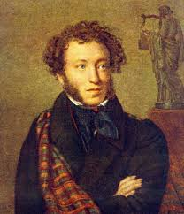

Стих А.С.Пушкина

Я помню чудное мгновенье...
- Я помню чудное мгновенье:
- Передо мной явилась ты,
- Как мимолетное виденье,
- Как гений чистой красоты.
- В томленьях грусти безнадежной
- В тревогах шумной суеты,
- Звучал мне долго голос нежный
- И снились милые черты.
- Шли годы. Бурь порыв мятежный
- Рассеял прежние мечты,
- И я забыл твой голос нежный,
- Твой небесные черты.
- В глуши, во мраке заточенья
- Тянулись тихо дни мои
- Без божества, без вдохновенья,
- Без слез, без жизни, без любви.
- Душе настало пробужденье:
- И вот опять явилась ты,
- Как мимолетное виденье,
- Как гений чистой красоты.
- И сердце бьется в упоенье,
- И для него воскресли вновь
- И божество, и вдохновенье,
- И жизнь, и слезы, и любовь.
1825
Всем Спасибо